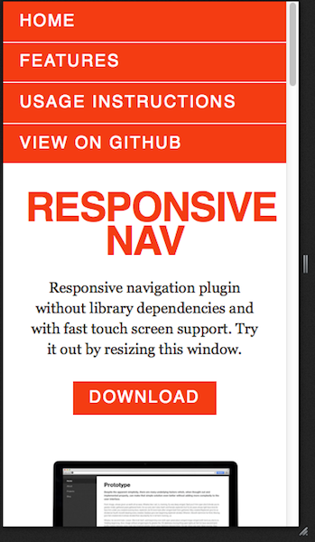

Going Off-Canvas
w/ CSS
Janson Hartliep @_janson_
Off-Canvas Navigation?
Handheld
http://jasonweaver.name/lab/offcanvas/
Medium

http://jasonweaver.name/lab/offcanvas/
Obama
SquareSpace
Pros
- space
- attractive
- convention
Cons
- advanced
- confusing
How *not* to do it.
Squarespace
Responsive Nav
http://responsive-nav.com/
Step 1
:target
html
css
header[role=banner] {
padding-top: 1.25rem;
padding-bottom: 1rem;
position: relative;
z-index: 20;
/* snip */
}
#menu {
/* snip */
position: absolute;
top: 0;
overflow: hidden;
z-index: 99;
width: 100%;
padding-top: calc(1.25rem + 1.25rem + 1rem); // matches height of banner
&:not(:target) {
z-index: 10;
height: 0;
}
a[title^=Close] {
position: absolute;
top: .75rem;
right: 1rem;
/* snip */
}
/* snip */
}
Step 2
Progressive JS
html
js
$('#show').on('click', function(e) {
e.preventDefault();
$('html').toggleClass('js-nav');
});
$('#menu a').on('click', function(e) {
if ( $(e.currentTarget).attr('href').charAt(0) === "#" ) {
e.preventDefault();
}
$('html').removeClass('js-nav');
});
css
$menu-width: 85%;
$menu-duration: 333ms;
$menu-function: ease-in-out;
html.js {
overflow-x: hidden; // hide scroll for shifted menu back and forth
#screen {
position: relative;
width: 100%;
@include transition(left $menu-duration $menu-function);
}
#menu {
height: auto;
bottom: 0;
width: $menu-width;
right: -$menu-width;
border-left: 2px solid $light-grey;
@include box-shadow(inset 0.5rem 0.5rem 1rem rgba(0,0,0,0.15));
}
}
// active menu
html.js-nav {
#screen {
right: $menu-width;
}
}
Step 3
Smooth it out
css
html.csstransforms3d {
#screen {
right: 0 !important;
@include transition(transform $menu-duration $menu-function);
@include transform(translate3d(0,0,0));
}
&.js-nav #screen {
@include transform(translate3d(-$menu-width,0,0));
}
}
Why Transform?
- using position:absolute and top/left
- using CSS 2D transforms and translate()
http://www.paulirish.com/2012/why-moving-elements-with-translate-is-better-than-posabs-topleft/
http://mobile.smashingmagazine.com/2012/06/21/play-with-hardware-accelerated-css/